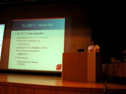

安定版rubyとその今後 （卜部 昌平）
- スピーカー
- 卜部 昌平 - (株)トランス・ニュー・テクノロジー
- プロフィール
- Ruby安定ブランチ係。現在の担当は1.8.5と1.8.6。ruby-talkへの初投稿がRuby本体のリリースアナウンスという、すごいのかすごくないのかよく分からん記録を最近作った。
- 講演時間
- 10：35〜11：00
- 講演者による資料
- http://mput.dip.jp/mput/?date=20070611#p01
http://mput.dip.jp/mput/Kaigi2007.odp (ooimpress presentation)
http://mput.dip.jp/mput/Kaigi2007.pdf (PDF)
今日は安定版ルビーのおはなしです。
自己紹介
「変な会社」に勤めているのだそうです。 「普通ではない人」は来てください、とのこと。 
これまで
1.8の歴史
1.8はほぼクリスマスリリースでしたが、そうではないバージョンも。 それなりの理由があった。
1.6.8は2002年12月24日。 1.8.0は、Previewを8ヶ月もやっていた。
何が変わったか。ライブラリが変わった。皆さんが大好きなopen-uriなども。 この頃はperlでもライブラリが増加した時期だった。
多重代入のセマンティクス、Enumerable inject/sortなども加えられた時期だった。
1.8.1は2003年12月25日。バグフィックスが多かった。 ここで重要なのはブランチが切られたこと。
1.8.2は2004年12月25日。コアを吐きます祭や、サーバのクラックなども。
問題になった1.8.3。2005年9月21日リリース。セーフレベルがサンドボックスとして機能しない脆弱性への対応だが、従来の機能拡張も混ざっていた。
1.8.4から10週間のリリースサイクルを導入した。 2005年12月25日に、ちゃんと10週間で出た。
1.8.5は2005年8月25日。10週間より少し遅れた。
いま
ブランチ
ruby_1_8 ポリシー: ruby-core:10019
- バグフィックス
- リファクタリング
- 未定義の動作
- その他よく使われているライブラリ
- fast threadなど
ruby_1_8_5
- バグフィックスのみ
- JVN#84798830への対応
- 他のブランチからのバックポート
- 現在50件ほど
ruby_1_8_6
- バグフィックスのみ
- 細かい修正がいろいろ入っている
- 3の10万乗とか
これから
リリースプラン
- 脆弱性への対応は随時
- 何もなければ3ヶ月おきに-pXをリリースしたい
- 1.8.6ヶ月前なのでそろそろ…さきほど会場で出しました
- 1.8.7
- 10月かな〜まだかな
- 希望的観測
- トランクからのバックポート JSON SecRand が入るといいなあ
- 1.9.1
- クリスマスごろ？
- 出たあとのことを考えなくちゃ
今あるブランチのメンテナンスの計画は：
- ruby_1_8はこれまで通り継続
- ruby_1_8_5 は 1.8.7 のリリースで終焉
- ruby_1_8_6 は 1.8.8 のリリースで終焉
というわけで、常に2本のブランチのメンテナンスをしている。
まとめ
- ruby 1.8は明確化されたポリシーのもとで開発、メンテナンスがおこなわれるようになった
- さっきリリースしたのでみなさん確認してください
質疑応答
- Q
- 1.8.9のあとのバージョンの振り方は？2桁になって困るのでは？
- A
- どうするかはまだ未定
- Q
- 安定版をメンテナンスする楽しみは?
- A
- Trunkへのそれぞれのcommitを見て、それがバグの修正なのか機能追加なのかを考えるだけでも楽しい
(ロガー: zunda)


Keyword(s):
References:[RubyKaigi2007速報ログ]